Kubernetes从1.4版本开始后就引入了kubeadm用于简化集群搭建的过程，在Kubernetes 1.13版本中，kubeadm工具进入GA阶段，可用于生产环境Kubernetes集群搭建。本节将使用Kubeadm搭建Kubernetes1.16.2集群，宿主机采用3台Vagrant构建的Centos7虚拟机，配置如下所示（Kubernetes推荐宿主机最低内存不能低于2G，CPU核心数最低不能低于2）：
| 操作系统 | IP | 角色 | CPU核心数 | 内存 | Hostname |
|---|---|---|---|---|---|
| centos7 | 192.168.33.11 | master | 2 | 4096M | master |
| centos7 | 192.168.33.12 | worker | 2 | 4096M | node1 |
| centos7 | 192.168.33.13 | worker | 2 | 4096M | node2 |
分享下我的Vagrantfile配置：
1 | Vagrant.configure("2") do |config| |
启动后如下所示：
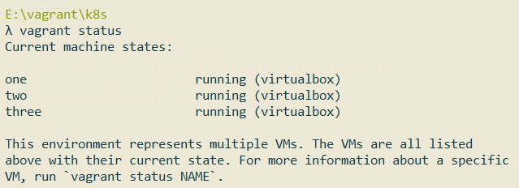
准备工作
下面这些准备工作分别在3台机器上使用root账号操作：
1.安装必要软件：
1 | yum install -y net-tools.x86_64 vim wget |
2.配置hosts：
1 | vim /etc/hosts |
内容如下所示：
1 | 192.168.33.11 master |
3.关闭防火墙：
为了避免kubernetes的Master节点和各个工作节点的Node节点间的通信出现问题，我们可以关闭本地搭建的Centos虚拟机的防火墙。生产环境推荐的做法是在防火墙上配置各个组件需要相互通信的端口。
1 | systemctl disable firewalld |
4.禁用SELinux，让容器可以顺利地读取主机文件系统：
1 | setenforce 0 |
1 | sed -i 's/^SELINUX=enforcing$/SELINUX=disabled/' /etc/selinux/config |
5.安装18.09版本的docker：
因为本节需要安装的kubernetes集群版本为1.16.2，而该版本的kubernetes最高支持的docker版本为18.09。可以通过该地址查看kubernetes和docker的版本对应关系：https://github.com/kubernetes/kubernetes/blob/master/CHANGELOG-1.16.md#downloads-for-v1160：
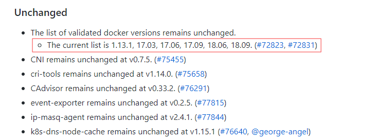
安装必要依赖:
1 | yum install -y yum-utils \ |
添加docker稳定版仓库：
1 | yum-config-manager \ |
安装18.09版本：
1 | yum install docker-ce-18.09.0 docker-ce-cli-18.09.0 containerd.io |
启动docker，并设置开机自启：
1 | systemctl enable docker && systemctl start docker |
修改/etc/docker/daemon.json文件:
1 | vim /etc/docker/daemon.json |
内容如下所示：
1 | { |
重启docker：
1 | systemctl daemon-reload |
6.将桥接的IPv4流量传递到iptables的链
1 | cat > /etc/sysctl.d/k8s.conf << EOF |
1 | sysctl --system |
7.关闭swap
Swap是操作系统在内存吃紧的情况申请的虚拟内存，按照Kubernetes官网的说法，Swap会对Kubernetes的性能造成影响，不推荐使用Swap。
1 | swapoff -a |
安装Master
准备工作完毕后，接着开始在192.168.33.11 Master虚拟机上安装Kubernetes Master。
1.配置国内的kubernetes源：
1 | cat <<EOF > /etc/yum.repos.d/kubernetes.repo |
2.安装kubelet、kubeadm和kubectl工具：
1 | yum install -y kubelet kubeadm kubectl --disableexcludes=kubernetes |
3.启动kubelet并设置开机自启：
1 | systemctl enable kubelet && systemctl start kubelet |
4.使用下面这条命令启动master：
1 | kubeadm init --kubernetes-version=v1.16.2 \ |
配置含义如下：
- kubernetes-version: 用于指定k8s版本，这里指定为最新的1.16.2版本；
- apiserver-advertise-address：用于指定kube-apiserver监听的ip地址，就是master本机IP地址。
- pod-network-cidr：因为后面我们选择flannel作为Pod的网络插件，所以这里需要指定Pod的网络范围为10.244.0.0/16
- service-cidr：用于指定SVC的网络范围；
- image-repository: 其中默认的镜像仓库k8s.gcr.io没有科学上网的话无法访问，我们可以将它修改为国内的阿里镜像仓库registry.aliyuncs.com/google_containers
启动时，需要拉取镜像，过程比较缓慢耐心等待即可。如果你想先拉好镜像再启动，你可以使用kubeadm config images list命令列出需要拉取的镜像。
启动成功后，你会看到类似如下提示:
1 | Your Kubernetes control-plane has initialized successfully! |
意思是，如果你想要非root用户也能使用kubectl命令的话，需要执行下面这些操作：
1 | mkdir -p $HOME/.kube |
而如果你是root用户的话，直接运行下面这段命令即可：
1 | export KUBECONFIG=/etc/kubernetes/admin.conf |
而下面这段则是用于工作节点Node加入Master集群用的，后面会使用到
1 | kubeadm join 192.168.33.11:6443 --token yf7sct.o63ceq25gxdu71cd \ |
安装Node节点，加入集群
接着在192.168.33.12和192.168.33.13虚拟机上操作。
和安装Master步骤一样，先安装好kubeadm相关工具，然后执行下面这条命令将Node加入到集群：
1 | kubeadm join 192.168.33.11:6443 --token yf7sct.o63ceq25gxdu71cd \ |
当输出如下内容是说明加入成功：
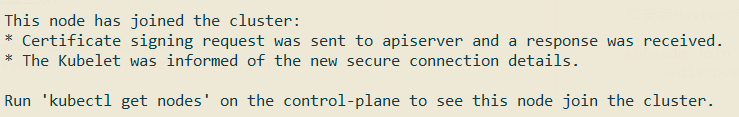
安装网络插件
在Master上执行kubectl get nodes命令，会发现Kubernetes提示Master为NotReady状态，这是因为还没有安装CNI网络插件：
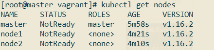
对于CNI网络插件，可以有许多选择，请参考https://kubernetes.io/docs/setup/independent/create-cluster-kubeadm/#pod-network的说明。这里我选择的flannel：
1 | wget https://raw.githubusercontent.com/coreos/flannel/2140ac876ef134e0ed5af15c65e414cf26827915/Documentation/kube-flannel.yml |
修改kube-flannel.yml：
1 | vim kube-flannel.yml |
修改的地方如下所示：
1 | ...... |
Vagrant 在多主机模式下有多个网卡，eth0 网卡用于nat转发访问公网，而eth1网卡才是主机真正的IP，在这种情况下直接部署k8s flannel 插件会导致CoreDNS无法工作，所以我们需要添加上面这条配置强制flannel使用eth1。
安装flannel：
1 | kubectl create -f kube-flannel.yml |
输出如下所示时，表示安装成功：
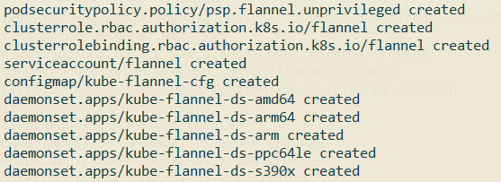
稍等片刻后，再次查看节点状态：
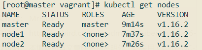
可以看到所有节点都是Ready状态。
执行kubectl get pods --all-namespaces，验证Kubernetes集群的相关Pod是否都正常创建并运行：
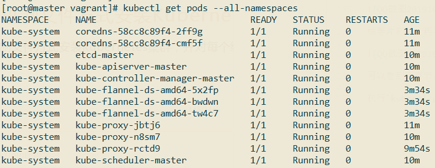
到这里通过Kubeadm安装Kubernetes 1.16.2集群已经成功了。如果安装失败，则可以执行kubeadm reset命令将主机恢复原状，重新执行kubeadm init命令，再次进行安装。
小试牛刀
为了快速地验证一下上面搭建集群是否可用，我们创建一个Nginx Deployment：
1 | kubectl create deployment nginx --image=nginx |
使用命令kubectl get pod,svc查看是否正常：
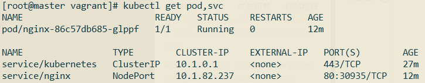
使用命令kubectl get pods,svc -o wide查看该Pod具体位于哪一个节点：
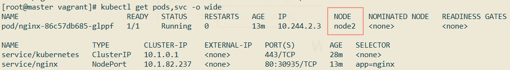
可以看到其位于Node2节点，该节点IP为192.168.33.13，端口为30935，使用浏览器访问该地址：

使用kubectl get pods命令查看Pod的情况:
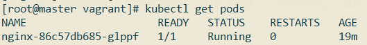
使用kubectl delete命令删除这个Pod看看会怎样：
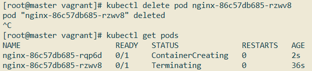
可以看到，刚刚的名为xxx的Pod处于Terminating（结束中）的状态，而另一个新的名为xxx的Pod正处于ContainerCreating（创建中）状态，因为默认情况下，replicas的值为1，Kubernetes集群会始终保持Nginx的实例为1。
要删除Nginx可以通过删除deployment来完成，使用kubectl get deployments命令查看当前的deployment：
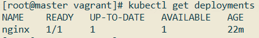
使用命令kubectl delete deployment nginx：
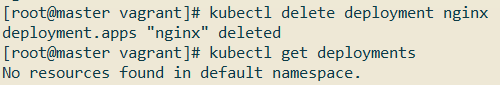
实际中我们一般通过yml或者json文件来创建应用，下面我们使用yml的方式创建一个3实例的Nginx集群：
1 | vim nginx-rc.yml |
内容如下所示：
1 | apiVersion: v1 |
1 | vim nginx-service.yml |
内容如下所示：
1 | apiVersion: v1 |
接着执行下面这两条命令启动Nginx集群：
1 | kubectl create -f nginx-rc.yml |
使用kubectl get pods命令查看Pod情况:
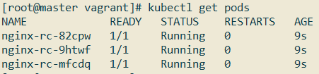
使用kubectl get services命令查看Service情况：
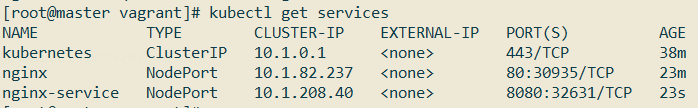
使用kubectl describe svc nginx-service命令查看Nginx Service详情：
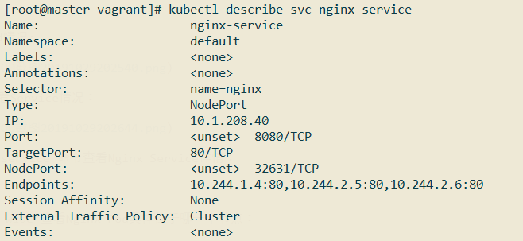
使用命令kubectl get pods,svc -o wide查看Nginx Pod具体位于哪一个节点：
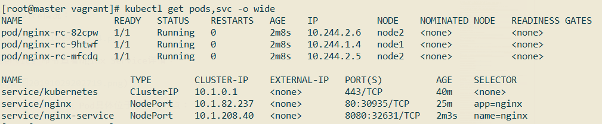
可以看到在node1和node2节点上都有Nginx的Pod，使用浏览器访问http://192.168.33.12:32631/或者http://192.168.33.13:32631/：
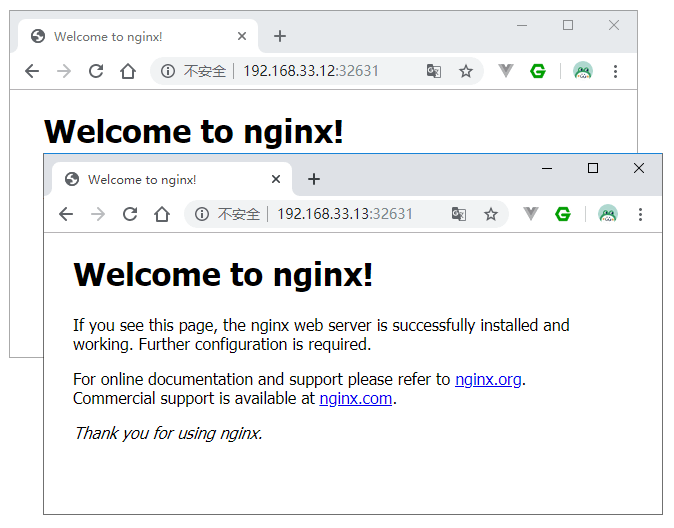
删除的话执行下面这两条命令即可：
1 | kubectl delete -f nginx-service.yml |